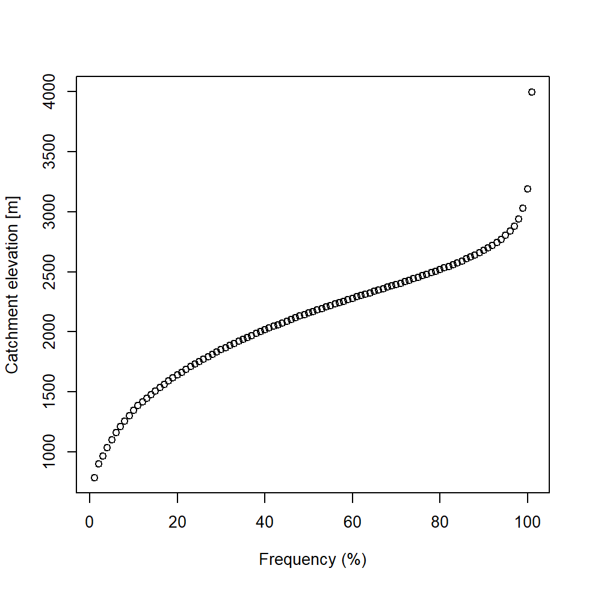
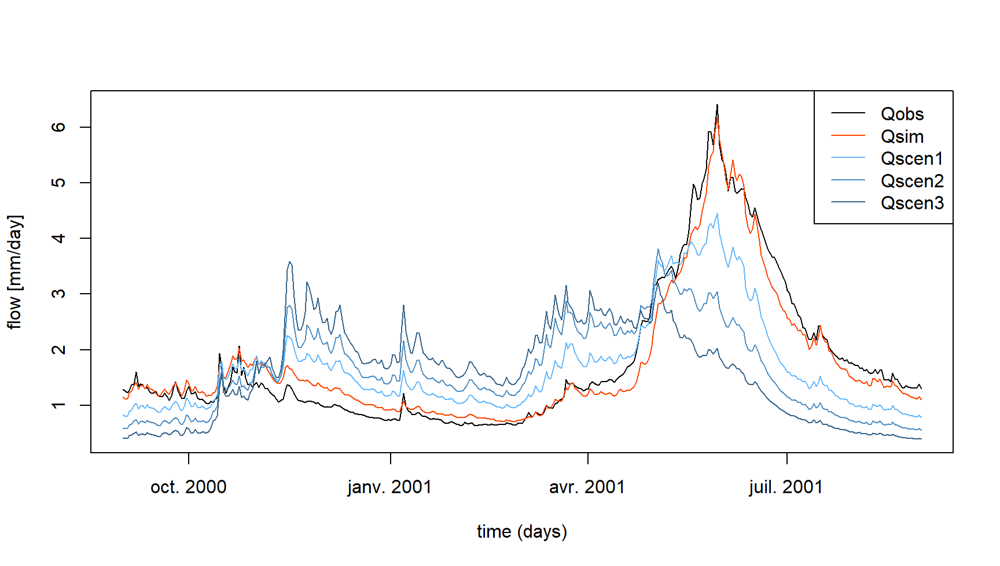

Impact of climate change on streamflow regime
Pierre Brigode & Olivier Delaigue
1 Objective
1.1 Context
The new report of the Intergovernmental Panel on Climate Change (IPCC) has just been released, announcing the latest global climate trends simulated by the latest versions of several climate models.
Your climate colleagues have applied several downscaling methods with the objective of transforming the large-scale global climate projections proposed by the IPCC, to a spatial scale compatible with a hydrological analysis on your studied catchment, La Durance à Embrun [La Clapière] - DREAL PACA. You will follow the methodology applied by Sauquet et al. (2015) in the framework of the R²D² project, quantifying in particular the future of the water resources of the river La Durance à Embrun [La Clapière] - DREAL PACA in 2050. The final product proposed by your climatological colleagues is a table of average changes in (i) average monthly air temperatures and (ii) monthly total precipitation, according to three scenarios. These changes were calculated by comparing a “present climate” period (noted CP) centered around the year 2000 (1990-2010) to a “future climate” period (noted CF) centered around the year 2050 (2040-2060). They are presented in the following table, and reveal an increase in air temperatures (more marked in summer for scenarios 2 and 3), a decrease in precipitation during the summer and an increase in precipitation during the autumn.
You are in charge of quantifying the impact of these climatic changes on the streamflow regime of the river La Durance à Embrun [La Clapière] - DREAL PACA from the results of your climatological colleagues and thanks to a rainfall-runoff model (see following figure).
This work will be completed in four steps:
- Generation of future climate series
- Calibration of the hydrological model with a snow module on the historical period.
- Simulation of the streamflows generated by the future climate series
- Comparison of “present time” and “future time” streamflow regimes.
| Jan | Feb | Mar | Apr | May | Jun | Jul | Aug | Sep | Oct | Nov | Dec | |
|---|---|---|---|---|---|---|---|---|---|---|---|---|
| Temp. scenario 1 | 1.5 | 1.5 | 1.5 | 1.5 | 1.5 | 1.5 | 1.5 | 1.5 | 1.5 | 1.5 | 1.5 | 1.5 |
| Temp. scenario 2 | 2.5 | 2.5 | 3.0 | 3.0 | 3.5 | 4.0 | 4.0 | 3.5 | 3.0 | 3.0 | 2.5 | 2.5 |
| Temp. scenario 3 | 3.5 | 3.5 | 4.0 | 4.5 | 5.0 | 6.0 | 6.0 | 5.0 | 4.5 | 4.0 | 3.5 | 3.5 |
| Jan | Feb | Mar | Apr | May | Jun | Jul | Aug | Sep | Oct | Nov | Dec | |
|---|---|---|---|---|---|---|---|---|---|---|---|---|
| Precip. scenario 1 | 10 | 10 | 5 | 0 | -5 | -10 | -10 | -5 | 0 | 5 | 10 | 10 |
| Precip. scenario 2 | 15 | 15 | 7 | 0 | -7 | -15 | -15 | -7 | 0 | 7 | 25 | 20 |
| Precip. scenario 3 | 20 | 15 | 10 | 0 | -15 | -30 | -30 | -15 | 0 | 20 | 40 | 30 |

1.2 Instructions
The purpose of this section is to explain certain expected tasks and to describe the calibration and simulation conditions (parameter calibration period, warm-up periods, calibration criterion, etc.).
1.2.1 Calculation of the streamflow regime
The streamflow regime corresponds to the average variation of streamflows over the course of a year. Here, it is described by the series of 12 mean monthly streamflows, estimated over all available years. The mean monthly streamflow for January is thus calculated by averaging the January streamflows of the different years available. The average year thus constituted summarizes the hydrological functioning of the catchment studied over a given period and makes it possible to distinguish seasons of low-flow and high-flow. In a climate change context, the analysis of the evolution of the regime makes it possible to quantify possible seasonal changes of the streamflows, either in terms of amplitude or temporal dynamics (for example related to snow melt evolution).
1.2.2 Generation of future climate series
Here, we do not have monthly climate series for the future period, so it is necessary to make strong assumptions to simulate the future regime of the studied catchment. A pragmatic approach suggested in this exercise is to apply the monthly changes in precipitation and air temperature given by climatologists to the time series observed over the present climate period. Thus, the average increase in janvier precipitation of 10 % predicted by scenario 1 is considered systematic for all future janvier months.
In order to apply the monthly evolution to the daily series, one approach consists in interpolating the monthly deltas at the daily time step, by assigning their value to the 15th of each month. This approach allows to estimate, for each scenario and each variable, a delta value for each Julian day.
A series of daily “future” precipitation can then be constructed by multiplying the observed daily precipitation by the estimated delta for each Julian day.
The potential evapotranspiration series, necessary for the operation
of the hydrological model used, will be estimated from the formula
developed by Oudin et al. (2005), thanks
to the dedicated PE_Oudin() function of the
airGR package.
1.2.3 Rainfall-runoff model and snow module
You will use here the GR4J model (Perrin, Michel, and Andréassian 2003) associated with the CemaNeige snow module (Valéry, Andréassian, and Perrin 2014).
GR4J is a conceptual and lumped rainfall-runoff model, operating on a daily time step and having 4 parameters. It requires continuous time series of daily precipitation and potential evapotranspiration (PE) as input.
The snow accumulation and melt model CemaNeige also operates on a daily time step, and requires as input a distribution of the altitude of the studied catchment, as well as time series describing the air temperature among the catchment.
These models are easily usable thanks to the airGRteaching package (Delaigue et al. 2023, 2018), developped for the R software by the Catchment Hydrology research group of the HYCAR research unit (INRAE, France).
The time series of observed precipitation, air temperature, PE and
streamflow can be easily formatted using the PrepGR()
function. A rainfall-runoff simulation can be performed with the
SimGR() function, and a parameter calibration using the
CalGR().
1.2.4 Calibration (and warm-up) period
In this exercise, the warm-up period will start on 1 janvier 1999 and end on 31 août 2000, and the calibration period will start on 1 septembre 2000 and end on 29 juin 2009.
1.2.5 Calibration criterion
The calibration criterion to be considered in this exercise is the Nash and Sutcliffe criterion (Nash and Sutcliffe 1970), noted \(NSE\) hereafter (see following equation). This criterion is widely used in hydrological modelling.
The NSE criterion, bounded between \(-\infty\) and \(1\), allows to quantify the performance of a model in a relative way, by comparing a series of simulated streamflows with a so-called “naive” model, here the average of the observed streamflows (i.e. a series of streamflows constituted in each time step by the average of the observed streamflows). Thus, a NSE value equal to 1 indicates a perfect agreement between the series of observed and simulated streamflows (which is never the case), whereas a NSE value lower than 0 means that the simulation considered is less efficient than the simulation of the “naive” model. The calculation of \(NSE\) is detailed in the following equation, where \(Q_{obs,t}\) is the observed streamflow at time step \(t\), \(Q_{sim,t}\) is the simulated streamflow at time step \(t\), \(\overline{Q_{obs}}\) is the average of the observed streamflows, and \(n\) is the number of observations:
\[\begin{equation} NSE = 1-\frac{\sum_{t=1}^{n}(Q_{obs,t}-Q_{sim,t})^{2}}{\sum_{t=1}^{n}(Q_{obs,t}-\overline{Q_{obs}})^{2}} \end{equation}\]
The elements necessary for the calculation of the calibration
criterion have to be set as arguments of the CalGR()
function.
1.2.6 Automatic parameter calibration of the model
The automatic parameter calibration aims at using an automatic algorithm to search in the parameter space for an optimum of the chosen objective function. It will automatically generate sets of parameters, test them, and generate others based on the performance of those already tested. The algorithm developed by Michel (1991) will be used in this exercise.
The parameters obtained after calibration will then be used to perform rainfall-runoff simulations for present and future climate periods.
1.3 Data available
The data set available to the rainfall-runoff modelling consists of:
- a time series of daily total precipitation (liquid + solid) [mm/day]
(
Ptot); - a time series of daily air temperatures [°C]
(
Temp); - a time series of daily potential evapotranspiration calculated with
the Oudin et al. (2005) formula [mm/day]
(
Evap); - a time series of daily streamflows expressed as a specific discharge
[mm/day] (
Qmmd); - a distribution of the altitude on the catchment area (hypsometric
curve) [m] (
Hypso).
You also have the tables of average monthly changes estimated by your fellow climatologists presented in the introduction.
2 Command lines for the production of simulations
2.1 Loading and formatting of data
The following command lines are used to read the data required to calibrate the GR4J rainfall-runoff model and to define the working periods (warm-up period, calibration period and simulation period):
# Catchment data loading
library(airGRdatasets)
data("X031001001", package = "airGRdatasets")
# Observed daily time series
ts_obs <- X031001001$TS
# Latitude of the catchment outlet
lat <- X031001001$Meta$Coor$Y
# Catchment elevation distribution
hypso <- X031001001$Hypso
# Warm-up period
per_ini <- c("1999-01-01", "2000-08-31")
# Calibration period
per_cal <- c("2000-09-01", "2009-06-29")
2.2 Automatic calibration of GR4J and CemaNeige
# Data processing for GR4J
prep_hist <- PrepGR(DatesR = ts_obs$Date,
Precip = ts_obs$Ptot,
PotEvap = ts_obs$Evap,
TempMean = ts_obs$Temp,
ZInputs = hypso[51],
HypsoData = hypso,
Qobs = ts_obs$Qmmd,
HydroModel = "GR4J",
CemaNeige = TRUE)
# Calibration step
cal_hist <- CalGR(PrepGR = prep_hist,
CalCrit = "NSE",
WupPer = per_ini,
CalPer = per_cal,
verbose = TRUE)## Grid-Screening in progress (0% 20% 40% 60% 80% 100%)
## Screening completed (729 runs)
## Param = 432.681, -0.649, 83.096, 2.384, 0.705, 3.787
## Crit. NSE[Q] = 0.7956
## Steepest-descent local search in progress
## Calibration completed (41 iterations, 1196 runs)
## Param = 482.992, 0.601, 275.889, 1.369, 0.333, 3.942
## Crit. NSE[Q] = 0.9075## NSE[Q]
## 0.9075081
2.3 Calculation of the observed and simulated regimes over the present time
The following command lines allow the calculation of observed and simulated streamflow regimes at daily and monthly time steps.
# Daily regimes
reg_hist_d <- SeriesAggreg(ts_qhist,
Format = "%d",
ConvertFun = c("mean", "mean"))
is_feb29 <- format(x = reg_d$Date, format = "%m-%d") == "02-29"
reg_hist_d <- reg_d[!is_feb29, ]
# Monthly regimes
reg_hist_m <- SeriesAggreg(ts_qhist,
Format = "%m",
ConvertFun = c("sum", "sum"))
# Calculated regimes
reg_hist_m## Dates Qobs Qsim
## 2270 2000-09-01 339.939 342.9322
## 2545 2000-10-01 376.967 424.5159
## 2856 2000-11-01 317.624 413.6535
## 3165 2000-12-01 241.390 312.4544
## 2 2001-01-01 219.614 248.8342
## 423 2001-02-01 166.271 192.1759
## 717 2001-03-01 291.193 286.5678
## 1068 2001-04-01 471.410 370.3787
## 1221 2001-05-01 1209.560 1104.5823
## 1537 2001-06-01 1174.049 1112.9204
## 1807 2001-07-01 554.163 509.9024
## 2076 2001-08-01 369.629 326.5216The regimes calculated in this way can be represented graphically (see following figure). The comparison of the two regimes allows to evaluate the capacity of the rainfall-runoff model (here GR4J and CemaNeige) to reproduce the regime of the studied catchment.

2.4 Generation of climate series for the future period
The following command lines allow the generation of climate series (PE, T and P) over the “future climate” period by using the series observed over the “present climate” period and transforming them from the climate changes estimated by climatologists.
# Delta of temperature
delta_temp <- data.frame(Month = sprintf("%02i-15", 1:12),
Tscen1 = rep(1.5, 12),
Tscen2 = c(2.5, 2.5, 3.0, 3.0, 3.5, 4.0, 4.0, 3.5, 3.0, 3.0, 2.5, 2.5),
Tscen3 = c(3.5, 3.5, 4.0, 4.5, 5.0, 6.0, 6.0, 5.0, 4.5, 4.0, 3.5, 3.5))
# Delta of precipitation
delta_ptot <- data.frame(Month = sprintf("%02i-15", 1:12),
Pscen1 = c(+10, +10, +05, 0, -05, -10, -10, -05, 0, +05, +10, +10),
Pscen2 = c(+15, +15, +07, 0, -07, -15, -15, -07, 0, +07, +25, +20),
Pscen3 = c(+20, +15, +10, 0, -15, -30, -30, -15, 0, +20, +40, +30))
# Time series with additional date information
ts_cc <- data.frame(Dates = ts_obs$Date)
ts_cc$Month <- format(x = ts_cc$Date, format = "%m-%d")
# Delta of temperature and precipitation in the same table
delta_cc <- merge(delta_temp, delta_ptot, by = "Month", all = TRUE)
# Merging the complete time series and the delta table
ts_cc <- merge(ts_cc, delta_cc, by = "Month", all = TRUE)
ts_cc <- ts_cc[order(ts_cc$Dates), ]
# Sub-setting of the time series with the dates available in the delta table
ts_cc_15 <- na.omit(ts_cc)
# Constitution of "future climate" time series
ts_clim_cc <- sapply(grep("scen", colnames(ts_cc_15), value = TRUE), FUN = function(i) {
# Daily delta interpolation (between the 15th of each month)
i_interpol <- approx(x = ts_cc_15$Dates, y = ts_cc_15[, i],
xout = ts_cc$Dates, rule = 2)$y
if (grepl("T", i)) {
ts_obs$Temp + i_interpol
} else {
ts_obs$Ptot * (1 + i_interpol / 100)
}
})
ts_clim_cc <- as.data.frame(ts_clim_cc)
# Summary of the "future climate" time series
summary(ts_clim_cc)## Tscen1 Tscen2 Tscen3 Pscen1 Pscen2
## Min. :-15.200 Min. :-14.200 Min. :-13.200 Min. : 0.00000 Min. : 0.00000
## 1st Qu.: -0.200 1st Qu.: 1.000 1st Qu.: 2.061 1st Qu.: 0.00000 1st Qu.: 0.00000
## Median : 4.800 Median : 6.333 Median : 7.567 Median : 0.09833 Median : 0.09767
## Mean : 4.812 Mean : 6.396 Mean : 7.731 Mean : 2.85887 Mean : 2.93352
## 3rd Qu.: 10.200 3rd Qu.: 12.200 3rd Qu.: 13.783 3rd Qu.: 2.27613 3rd Qu.: 2.30533
## Max. : 20.700 Max. : 23.200 Max. : 25.200 Max. :95.56339 Max. :104.73519
## Pscen3
## Min. : 0.000
## 1st Qu.: 0.000
## Median : 0.095
## Mean : 2.964
## 3rd Qu.: 2.201
## Max. :117.354# PE calculation
ts_clim_cc$Julian <- as.numeric(x = format(x = ts_cc$Date, format = "%j"))
ts_clim_cc$Escen1 <- PE_Oudin(JD = ts_clim_cc$Julian,
Temp = ts_clim_cc$Tscen1,
Lat = lat, LatUnit = "deg")
ts_clim_cc$Escen2 <- PE_Oudin(JD = ts_clim_cc$Julian,
Temp = ts_clim_cc$Tscen2,
Lat = lat, LatUnit = "deg")
ts_clim_cc$Escen3 <- PE_Oudin(JD = ts_clim_cc$Julian,
Temp = ts_clim_cc$Tscen3,
Lat = lat, LatUnit = "deg")2.5 Rainfall-runoff simulation for the future period
The following command lines allow us to perform a rainfall-runoff simulation of the “future climate” period from the climate series generated in the previous section.
# Loop on the three scenarios
ts_qcc <- list()
for (i in 1:3) {
i_col_P <- paste0("Pscen", i)
i_col_E <- paste0("Escen", i)
i_col_T <- paste0("Tscen", i)
i_col_Q <- paste0("Qscen", i)
# Data processing for GR4J
i_prep_cc <- PrepGR(DatesR = ts_cc$Date,
Precip = ts_clim_cc[, i_col_P],
PotEvap = ts_clim_cc[, i_col_E],
TempMean = ts_clim_cc[, i_col_T],
ZInputs = hypso[51],
HypsoData = hypso,
HydroModel = "GR4J",
CemaNeige = TRUE)
# Simulation step
i_sim_cc <- SimGR(PrepGR = i_prep_cc,
WupPer = per_ini,
SimPer = per_cal,
Param = param_cal_hist,
verbose = FALSE)
# Storage of observed and simulated streamflow series
i_ts_cc_15 <- as.data.frame(i_sim_cc)
ts_qcc[[i_col_Q]] <- i_ts_cc_15$Qsim
}
# Combine historical and future time series
ts_q <- cbind(ts_qhist, as.data.frame(ts_qcc))2.6 Simulated streamflow regime calculations over the future period
The following command lines are used to calculate the simulated streamflow regime over the future climate period.
# Daily regimes
reg_cc_d <- SeriesAggreg(ts_q,
Format = "%d",
ConvertFun = rep("mean", 5))
is_feb29 <- format(x = reg_cc_d$Dates, format = "%m-%d") == "02-29"
reg_cc_d <- reg_cc_d[!is_feb29, ]
# Monthly regimes
reg_cc_m <- SeriesAggreg(ts_q,
Format = "%m",
ConvertFun = rep("sum", 5))
# Calculated regimes
reg_cc_m## Dates Qobs Qsim Qscen1 Qscen2 Qscen3
## 2270 2000-09-01 339.939 342.9322 256.0630 185.7943 129.2014
## 2545 2000-10-01 376.967 424.5159 378.8893 311.4428 263.4452
## 2856 2000-11-01 317.624 413.6535 488.4572 546.3996 640.1677
## 3165 2000-12-01 241.390 312.4544 409.2737 490.5027 583.0666
## 2 2001-01-01 219.614 248.8342 343.7781 429.3201 533.9006
## 423 2001-02-01 166.271 192.1759 262.7620 322.5987 384.7521
## 717 2001-03-01 291.193 286.5678 436.3709 583.8233 668.3347
## 1068 2001-04-01 471.410 370.3787 536.1424 667.8721 704.6265
## 1221 2001-05-01 1209.560 1104.5823 1049.0074 869.3730 644.5160
## 1537 2001-06-01 1174.049 1112.9204 771.4922 527.6899 365.9184
## 1807 2001-07-01 554.163 509.9024 327.4281 230.6258 165.8818
## 2076 2001-08-01 369.629 326.5216 226.2868 159.2173 111.6768This “future” regime can be compared graphically with the streamflow regimes simulated over the present climate period (see next figure). This comparison reveals a decrease in streamflows, particularly marked for the spring and summer months (May to August).

The evolutions are more marked at the daily time step (see following figure).

It is important to analyze the results obtained in light of the many uncertainties associated with the production of simulations of hydrological impacts of climate change. The uncertainties associated with the use of different climate models and different downscaling methods can be very large. In addition, the use of hydrological model parameters obtained after calibration on a catchment under climate A to simulate the hydrological response to climate B of this same catchment can also generate high uncertainties (e.g. Coron et al. 2012; Brigode, Oudin, and Perrin 2013).